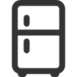
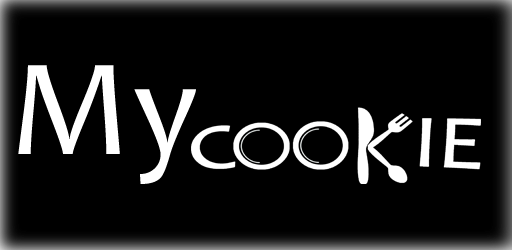

| Slika | Opis |
|---|---|
 |
Dodirom na sliku odabirete pretrazivanje recepata unosenjem kljucnih rijeci iz naziva recepta.
Navedeni oblik pretrazivanja svako preporucujemo kada imate ideju o tome kakvo jelo zelite.
Pa tako primjerice mozete upisati kljucnu rijec juha a aplikacija ce izlistati sve recepte juhe,
koje dalje mozete sortirati prema nekim od slijedecih karakteristika:
|
|  | Dodirom na sliku odabirete pretrazivanje recepata ovisno o sastojcima a pri tome se otvara novi prozor putem kojeg mozete odabrati kategorije i podkategorije namirnica koje imate na raspolaganju ili jednostavno ih zelite koristiti za pripremu jela. Pri tome je potrebno napomenuti da u samom definiranju sastojaka mozete sami odrediti opcenitost navodjenja sastojaka. Pa tako mozete odabrati meso ili pojedinu potkategoriju mesa primjerice pilece, no naravno o tome ovisi i broj recepata koji ce Vam se prikazati pa se u tom slucaju uglavnom preporuca preciznije definiranje sastojaka odnosno njihovih potkategorija. Navedeni oblik pretrazivanja svakako preporucujemo kada zelite pronaci jelo s nekim specificnim sastojcima. |
| Dodirom na sliku otvara se karta na kojoj ce biti prikazana Vasa trenutna lokacija (ukoliko prihvatite uvjete za pretrazivanje Vase trenutne lokacije) i najbliza mjesta kupnje s obzirom na Vasu lokaciju. Vasa lokacija bit ce prikazan plavom tocom, a bliska mjesta kupnje crvenim oznakama. Nadalje, u izborniku mozete unijeti broj (u km) za koji zelite pretrazivati bliska mjesta kupnje. | |
|  | Dodirom na sliku ispod (MyCookie) otvara se prozor u kojem se nalaze svi Vasi prethodno spremljeni recepti. Receptima mozete pristupiti klikom na pojedini recept neovisno o tome jeste li spojeni na Internet. Isto tako, ukoliko ste spojeni na Internet, mozete uskladiti (sinkronizirati) Vase lokalno pohranjene recpete s onima u nasoj bazi podataka. |
| Dodirom na sliku ce se otvoriti novi prozor koji sluzi za prijavu korisnika u aplikaciju. Potrebno je odabrati korisnicki racun koji zelite povezati s aplikacijom, odnosno s kojim se zelite registrirati. Nakon toga trebate prihvatiti uvjete koristenja i zapoceti sa samim koristenjem aplikacije i dodatnih funkcionalnosti koje Vam prijava u istu omogucuje! |
Zelimo Vam ugodno koristenje Cookie aplikacije i jos ugodnije kuhanje ukusnih jela! :)